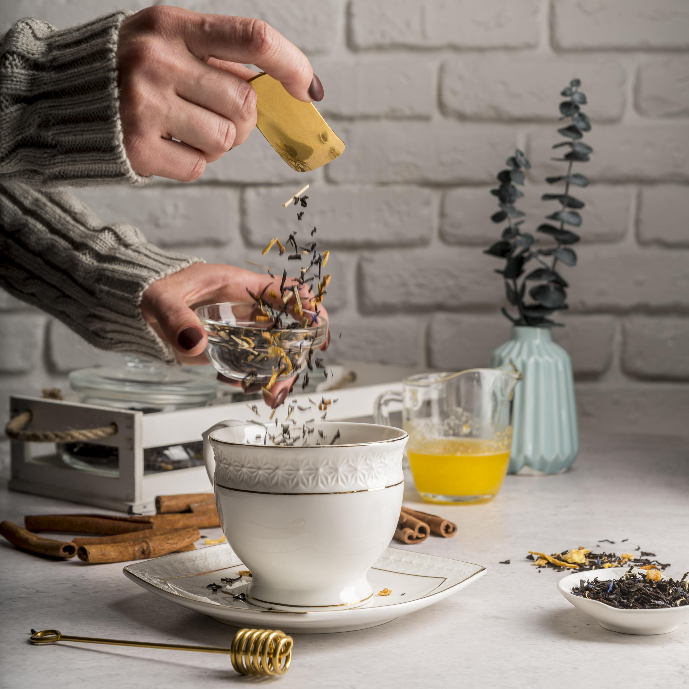

Home
Honey Lavender Matcha

Description
Soothing notes of lavender are steeped into golden honey
syrup and swirled into steamed milk, then layered with
velvety ceremonial matcha. Floral and oh so dreamy
Ingredients
- Honey Lavender Syrup
- 1/2 cup water
- >1/2 cup honey
- 1 tbsp dried culinary lavender buds
- (makes multiple servings — store extra in fridge up to 1 week)
- Matcha Layer
- 1 tsp matcha green tea powder (ceremonial grade preferred)
- 1–2 tbsp hot water (not boiling, ~175°F / 80°C)
- Milk Layer
- 3/4 cup milk of choice (oat, almond, dairy, soy — all work)
- Ice cubes (if serving cold)
Recipe
- Make the Lavender Honey Syrup:
- In a small saucepan, combine water, honey, and lavender buds.
- Bring to a gentle simmer, stir occasionally.
- Turn off heat after 5 minutes and let steep for 10.
- Strain out lavender buds and cool. Store extra in a jar.
- Whisk the Matcha:
- Sift the matcha powder into a small bowl.
- Add hot water and whisk with a bamboo whisk (chasen) or small frother until frothy and smooth.
- Assemble the Drink:
- Add ice over the strawberry layer if making an iced version.
- Slowly pour in the milk to create a white middle layer.
- Gently pour the whisked matcha over the back of a spoon to float it on top.
- Serve:
- Stir before drinking for the perfect blend of flavors.
- Optional: garnish with dried lavender or a honey swirl.